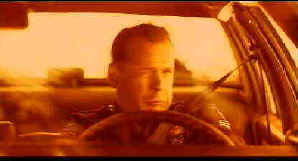

Columbia Tristar/1993//102m/ANA,WS 1.85.FS1.33
 |
Going the distance through fire. ©Columbia Tristar |
Willis is cool and confident playing
Tommy Hardy. Wise guy comments are limited and Willis is mostly straight and intense. The
surrounding actors offer various appeal. Dennis Farina brings his usual screen charm to
Tommy's uncle, police Captain Nick Detillo. Tom Sizemore has some nice moments as Tommy's
cousin Danny Detillo. And Sarah Jessica Parker does a credible job playing Hardy's new
partner.
The script covers a period of a couple of years. The first part is the pursuit of the killer, Tommy ex-communication from the community of cops, and a dubious arrest and conviction of the killer. Two years later, with Hardy reassigned from the detective bureau to river patrol and rescue, the killings start again. One might question why they have ceased for two years and simply start up again, but let's not quibble. Hardy's reassignment provides opportunity for some good river chases, but nothing compares to that dynamic opening car chase.
Striking Distance is one beauty of a DVD. Another anamorphic gem from Columbia Tristar, the image is so clean I totally forget I was watching video. Night scenes have more snap and punch. Colors are intense and tightly controlled. Shadow detail is simply perfect. The 2-channel Dolby Digital soundtrack crackles with well located information. Bass is deep and tight.